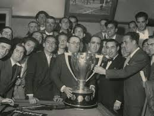
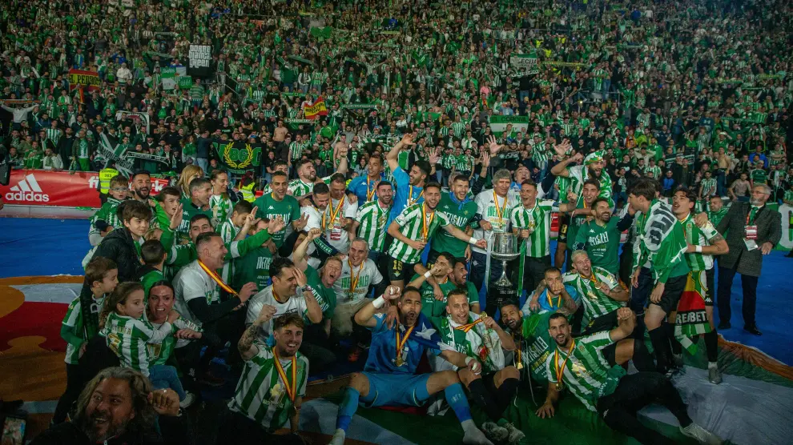

¡Bienvenido Bético!
Historia, noticias y merchandising del Real Betis Balonmpié
HISTORIA
El Real Betis Balompié, S. A. D., también conocido como Real Betis, es una entidad polideportiva con sede en la ciudad de Sevilla, en España. Se fundó el 12 de septiembre de 1907 como Sevilla Balompié para la práctica del fútbol y así consta como fecha fundacional para el propio club. Oficialmente se registró el 1 de febrero de 1908. Disputa sus encuentros como local en el Estadio Benito Villamarín, con capacidad para 60 721 espectadores.Es uno de los nueve clubes españoles que han conquistado Liga y Copa (Copa del Rey), y también es el club que más veces ha subido y bajado a la Segunda División de España. En 1935 se convirtió en el cuarto club de la historia en conquistar la Primera División de España, una década en la que se popularizó su conocido lema "Viva el Betis manquepierda"  Es además, el primer club que levantó la Copa del Rey con esta denominación en democracia, título que consiguió en 1977, en 2005 y en 2022. No siempre ha competido en la máxima división nacional. Es uno de los dos únicos clubes españoles que se han proclamado campeones de Primera, de Segunda y de Tercera División y se encuentra pese a ello en el top ten de la clasificación histórica de la Primera División.Su trayectoria en las competiciones nacionales le ha llevado a disputar competiciones internacionales en diecisiete ocasiones: una de la UEFA Champions League, máximo torneo a nivel de clubes en Europa, once de la Copa de la UEFA/Liga Europa, dos en la Liga Conferencia, dos de la extinta Recopa de Europa y una en la extinta Copa de Ferias; a ello se suman otras participaciones en la también extinta Copa Ibérica. Es uno de los clubes españoles que más veces ha competido en Europa. También ha completado la mejor campaña de un equipo andaluz en primera división en número de puntos y en goles a favor (77 puntos y 81 goles, temporada 1996-97; 79 % del total de los puntos obtenidos, temporada 34/35).Se situó en el vigésimo puesto del top-25 de la clasificación de clubes del mundo elaborada por la Federación Internacional de Historia y Estadística de Fútbol (IFFHS) en los años 1995, 1997 y 2005.Tiene una de las aficiones más reconocidas de España.  El Betis es el cuarto equipo con mayor número de socios de España con un total de 85 708 socios, de los cuales 53 161 tienen localidad en el estadio, que es el número límite que el Betis marca como máximo (conocido como “numerus clausus”) y el resto de localidades libres quedan para la venta de entradas y los compromisos. Disputa el derbi sevillano contra el Sevilla Fútbol Club, con el cual mantiene una enorme rivalidad histórica desde sus inicios en los años 1910 por ser dos equipos de la misma ciudad. Aunque es principalmente conocido por sus equipos de fútbol masculino, cuenta con categorías femeninas y con secciones deportivas en fútbol sala y baloncesto.
ÚLTIMAS NOTICIAS
FINAL EN POLONIA
Abierta la segunda ronda de asignación de entradas para la final de la UEFA Conference League
Se pondrán a disposición de los abonados 981 localidades siguiendo el criterio de antigüedad.
Todos ellos deberán aceptar su entrada antes de mañana 15 de mayo a las 16:00 horas.
PROBLEMAS EN LA PORTERIA
Fran Vieites sufre una lesión grado 1 del sóleo izquierdo
¡GRANDES AVANCES!
El Real Betis Balompié estrena su primera peña bética para visibilizar a las personas con discapacidad